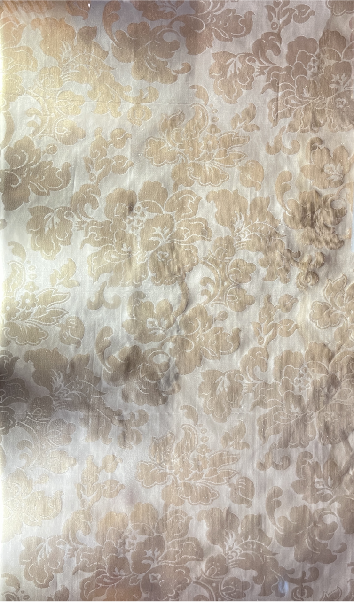
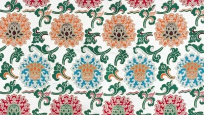
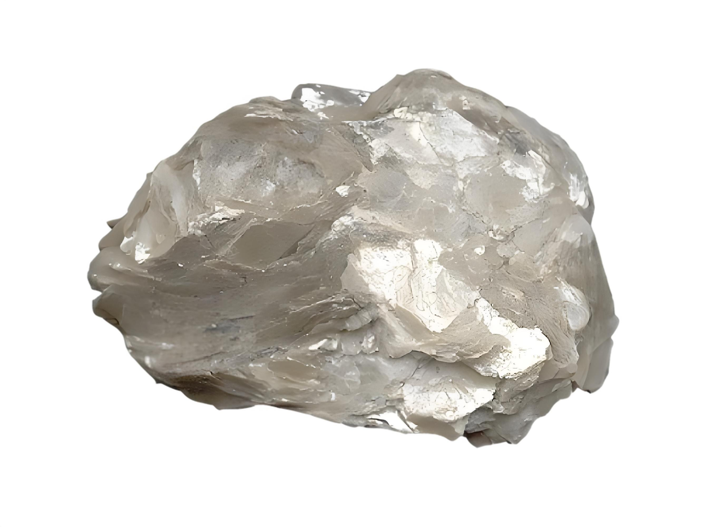
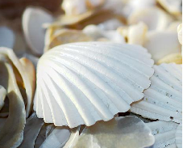
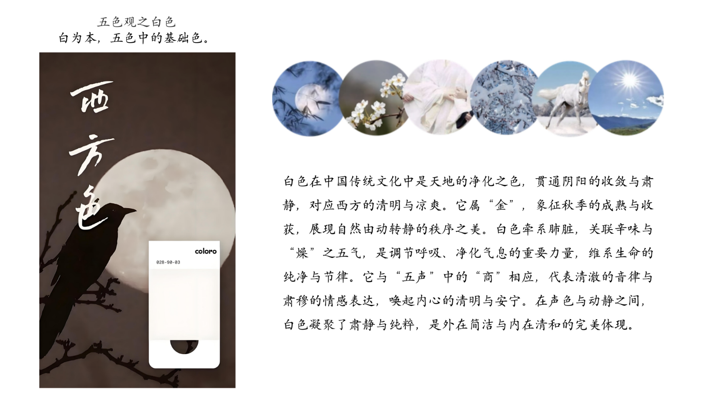

藏于江南丝绸文化博物馆

白地牡丹织锦缎
藏于江南丝绸文化博物馆
藏于江南丝绸文化博物馆

浅粉地茶花妆花缎
藏于江南丝绸文化博物馆
藏于江南丝绸文化博物馆

灰地双鱼八吉祥海水妆花缎
藏于江南丝绸文化博物馆
藏于江南丝绸文化博物馆
| 名称 | 别名 | 类型 | 主要化学成分 |
|---|---|---|---|
| 胡粉 | 铅白、铅粉、铅华 | 从矿石中以化学方法制取 | 碱性碳酸铅 [PbCO₃ · Pb(OH)₂] |
| 白云母 | 绢云母 | 天然矿石 | 硅酸钾铝 [H₂KAl₃(SiO₄)₃] |
| 蛤蜊粉 | 蛤粉、海蛤粉 | 贝壳经加工制成的粉。 | 铝硅酸盐 [Al₂O₃ · 2SiO₂ · 2H₂O] |

胡粉
胡粉是一种传统的矿物颜料，由碳酸铅制成，呈现纯白色或微带淡黄色，广泛用于中国古代绘画、壁画、书画装饰以及化妆品制作。胡粉具有质地细腻、色泽柔和、遮盖力强的特点，是古代工艺中常用的白色颜料之一。在传统绘画中，胡粉常用于表现高光和细腻的白色细节，赋予作品立体感。然而，由于胡粉含铅，其使用存在一定的毒性风险。
白云母
白云母（学名：Muscovite），是一种天然层状硅酸盐矿物，因其晶体薄片具有光泽和透明特性而广泛应用于传统工艺与现代工业中。在中国古代，白云母被用作矿物颜料，呈现出柔和的白色或微透明效果，常用于绘画、壁画及装饰品中，增添作品的质感与光泽。在中医学中，白云母亦有药用价值，被认为具有镇静安神、化痰软坚的作用。


蛤粉
蛤蜊粉是一种传统的天然矿物颜料，由蛤蜊壳经过研磨制成，呈现细腻的白色或微带乳白光泽，广泛用于古代绘画、壁画以及工艺品的装饰。因其质地轻盈、覆盖力强且耐久性高，蛤蜊粉在中国传统艺术中常用于表现明亮的白色区域或作为底色处理。此外，蛤蜊粉在民间也被用于制作化妆品，如传统的美容粉，因其温和的性质受到青睐。

云锦时代
Copyright© 2024 All Rights qing.
智绘云锦实践项目组
地址：南京江宁科学园龙眠大道629号 邮编：211188 电话:888-888888